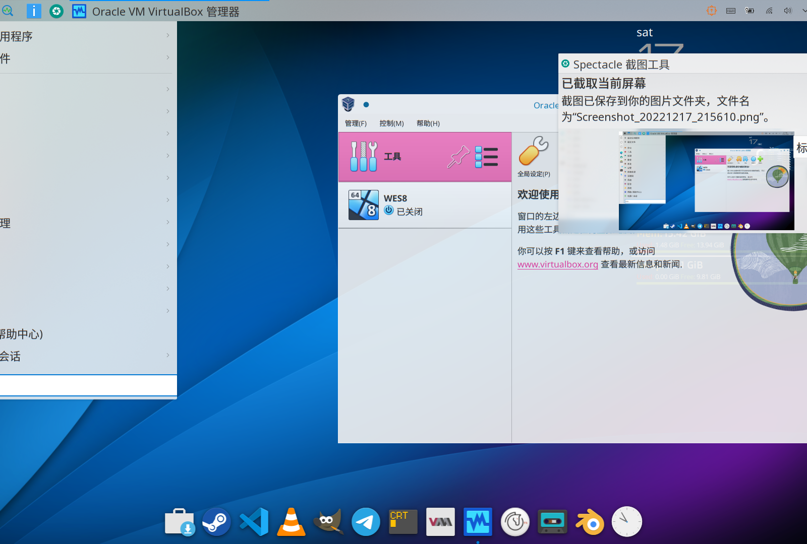
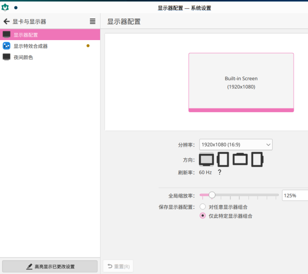
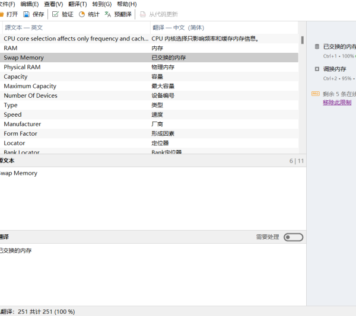
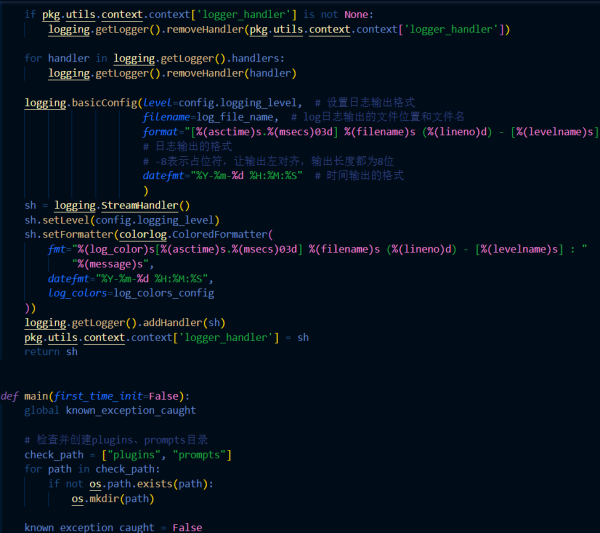

开源操作系统
基于GNU/Linux开发开源操作系统
开源项目本地化
翻译著名开源项目界面及文档
开源软件开发
开发社区自研软件
知识库文章撰写
编写开源软件操作说明等
开源操作系统 OS
Open source OS based on GNU/Linux
简约不失优美，实用美学主义，让桌面操控成为一种享受，为桌面用户提供商业操作系统之外的选择。
提高品质，保持和上游开源社区紧密合作；杜绝分裂主义，为开源社区发展做出应有贡献。

开源项目本地化 翻译
Translate technical documents from abroad
软件本地化，与开源方案提供的各种优势相结合，改善了用户体验，并最终导致相关方案的推广普及。
用户也相信，如果他们能用自己的语言理解这些项目，他们会更有效地使用它。

软件和知识库 开发
Make our modest for open source software
开源项目不仅仅是单个个体的贡献，更是一个团队共同发展的过程。在开源项目中，可以和其他开发者合作，共同开发和推广项目，从而提高整个开源社区的水平和影响力。
编写知识库文档,可以提供开发者和其他使用者所需的指导和信息，从而使开发更加顺利和高效。

常见问题
玟茵开源社区是以Linux开源操作系统为主要研究对象的开源社区，主要参加对象为大中学生。 我们致力于发展Linux操作系统在国内的使用，以及提供更好的Linux操作体验。我们的目标是，让Linux操作进入个人电脑用户的视野，而不是局限于极客圈，让开源的思想真正发扬光大下去，为全人类最终用上适合自己的软件而奋斗。我们用"玟茵"这个名字，正是希望社区能像美玉一样，保持高洁志趣，枝繁叶茂发展下去，为开源软件造福人类贡献自己的一份力量！
"玟茵"这个充满柔美气息的名字，暗示了本开源社区的受众对象主要是女性用户，另外"茵"可做如下解释：
宋叶梦得《石林诗话》卷中："古诗有离合体，近人多不解。此体始於,孔北海:"余读《文类》，得 北海 四言一篇云：'渔父屈节，水潜匿，玟琁隐曜，美玉韬光。'"
茵，车重席也。——《说文》
交茵畅毂。——《秦风·小戎》。传："文茵虎皮也。"
茵席。——《礼记·少仪》。注："著褥也。"
御者在茵上。——《汉书·五行志》
同车未尝敢均茵冯。——《汉书·周阳由传》
绿草如茵。——清·薛福成《观巴黎油画记》
宋叶梦得《石林诗话》卷中："古诗有离合体，近人多不解。此体始於,孔北海:"余读《文类》，得 北海 四言一篇云：'渔父屈节，水潜匿，玟琁隐曜，美玉韬光。'"
茵，车重席也。——《说文》
交茵畅毂。——《秦风·小戎》。传："文茵虎皮也。"
茵席。——《礼记·少仪》。注："著褥也。"
御者在茵上。——《汉书·五行志》
同车未尝敢均茵冯。——《汉书·周阳由传》
绿草如茵。——清·薛福成《观巴黎油画记》
1. 优美界面设计
简约不失优美，实用美学主义，让桌面操控成为一种享受，为桌面用户提供商业系统之外的选择。
2. 严格质量控制
提高品质，保持和上游开源社区紧密合作；杜绝分裂主义，为开源社区发展做出应有贡献。
3. 完善项目管理
用规定环节去完成项目开发。开发测试并重，用户反馈及时融入下一轮开发中。
简约不失优美，实用美学主义，让桌面操控成为一种享受，为桌面用户提供商业系统之外的选择。
2. 严格质量控制
提高品质，保持和上游开源社区紧密合作；杜绝分裂主义，为开源社区发展做出应有贡献。
3. 完善项目管理
用规定环节去完成项目开发。开发测试并重，用户反馈及时融入下一轮开发中。
Open Source Project
UNIX很简单，但需要有一定天赋的人才能理解这种简单。
如果debugging是一种消灭bug的过程，那编程就一定是把bug放进去的过程。
程序员和上帝打赌要开发出更大更好——傻瓜都会用的软件。而上帝却总能创造出更大更傻的傻瓜。所以，上帝总能赢。